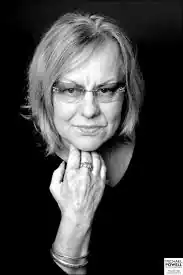

Британська письменниця, знаменита завдяки створеному нею герою — Адріану Моулу.
Сьюзан Таунсенд народилася 02.04.1946 році в Англії. Сім'я майбутньої письменниці ставилася до простих верствам суспільства: її мати була кондуктором, а батько листоношею. Сью була старшою з п'ятьох доньок. У віці семи років поступила в школу Glen Hills Infants and Juniors School, яку залишила в п'ятнадцять років після того, як провалила фінальний іспит.
Таунсенд перепробувала різні професії, включаючи двірника і рознощика газет. У восемнадцарічному віці вийшла заміж. Мрії про літературну кар'єру довелося відкласти. Від першого чоловіка Сью народилося троє дітей. Після того, як її шлюб розвалився і вона залишилася одна, Таунсенд зустріла інструктора з веслування і провідника Коліна Бродвею (англ. Colin Broadway) і незабаром сама стала інструктором з веслування на каное. Колін став батьком її четвертого дитини, дочки Лізи. Саме Коліну Сью розповіла про свої мрії про літературу. У 1978 рік їй вдається поєднати греблю з літературною творчістю. Ще під час першого заміжжя Таунсенд захопилася читанням, вивчала історію літератури, пізнаючи різні стилі. Писала п'єси для театру "Фенікс" (Phoenix Arts Centre). За першу свою п'єсу "Брюхоранг" в 1981 році Таунсенд отримала премію від лондонської телекомпанії "Темз Телевижен" (англ. Thames Television). А ще через десять років її оголосили класиком англійської літератури. Крім "Щоденники Адріана Моула" написала кілька п'єс, романи "Ми з королевою", "Ковентрі відроджується", "Діти-привиди". У 1999 році лікарі діагностували у письменниці цукровий діабет, який призвів до погіршення зору. До 2001 року Таунсенд остаточно осліпла, однак вона продовжує писати. За визнанням самої письменниці своїм найбільшим досягненням вважає те, що "її власні діти насолоджуються її суспільством і читають книги".